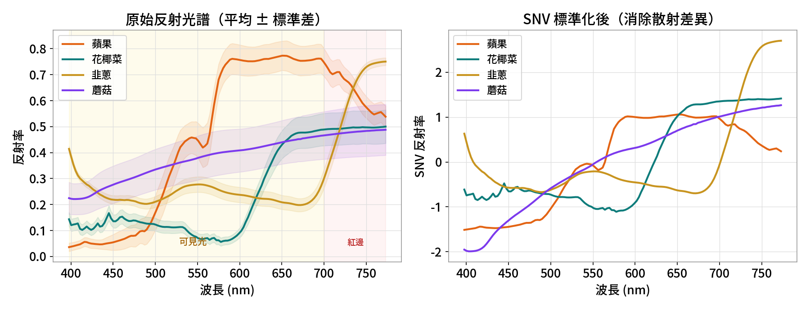
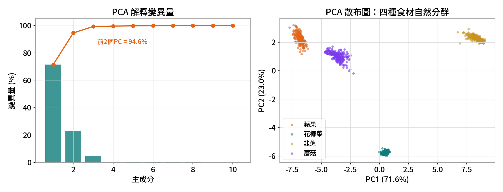
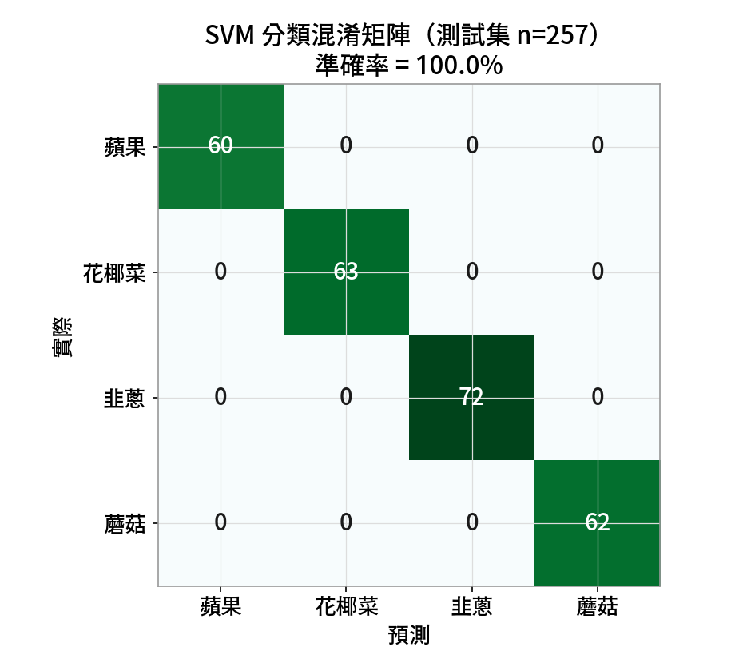
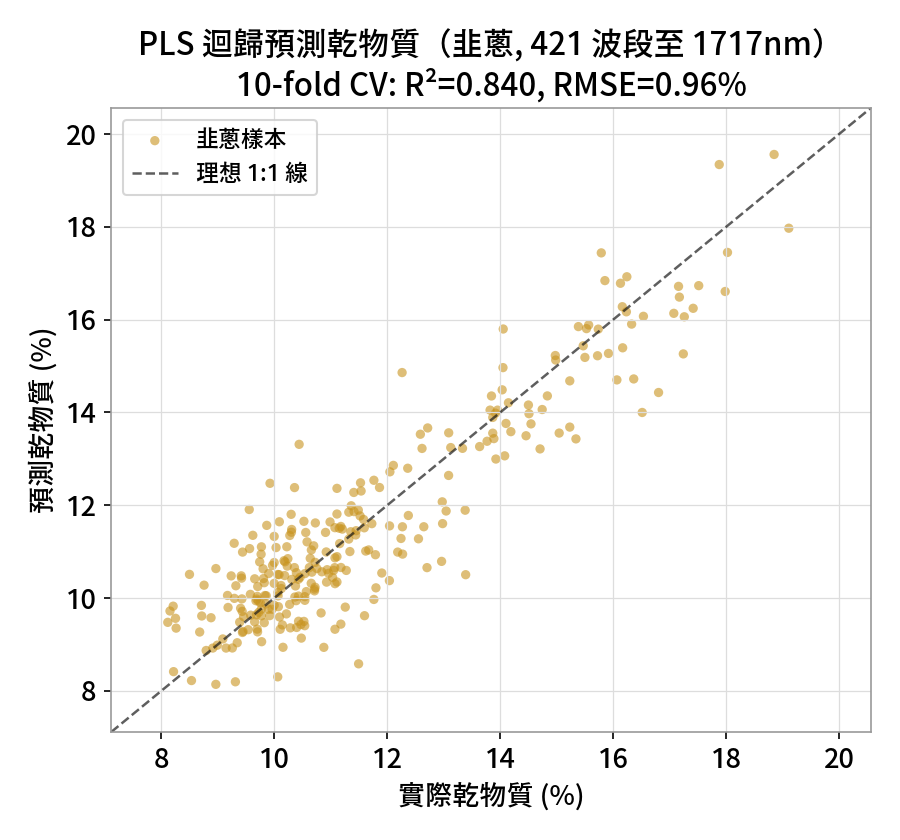

影像 × 光譜：每個像素一條指紋
一般相機每個像素只有 RGB 三個數字；高光譜成像（Hyperspectral Imaging, HSI）讓每個像素都記錄一整條光譜—— 把影像（空間 x, y）和光譜（波長 λ）疊成一個「資料立方體」。在可見-近紅外（Vis-NIR）波段，這條光譜反映了水分、糖、色素等成分， 讓我們能不接觸、不破壞地一次看出整顆水果或整片葉菜的化學分布。
資料立方體
每個像素一條光譜，整張影像就是 (x, y, λ) 的三維資料——空間與光譜同時到手。Vis-NIR 看成分
可見光看顏色/色素，近紅外看 O–H、C–H 等鍵結，對應水分與乾物質。但是…
每個樣本是上百個高度相關的數字，必須靠化學計量學（PCA / 分類 / PLS）才能解讀。食材 ──▶ 高光譜相機 ──▶ 資料立方體 (x, y, λ) ──▶ 取每個樣本平均光譜 ──▶ 整理成「樣本 × 波段」資料矩陣
SpectroFood：四種食材的真實光譜（開源）
資料來自 SpectroFood 開源資料集（Zenodo 8362947）：蘋果、花椰菜、韭蔥、蘑菇的 Vis-NIR 反射光譜，並附實驗室量得的乾物質含量。
共 1028 個樣本，全部數字皆由 analysis/run_analysis.py 實際執行產生、可重現。
| 食材 food | 樣本數 | 本課用途 |
|---|---|---|
| 蘋果 Apple | 240 | PCA 探索 · 分類 |
| 花椰菜 Broccoli | 250 | PCA 探索 · 分類 |
| 韭蔥 Leek | 288 | 分類 · PLS 乾物質迴歸 |
| 蘑菇 Mushroom | 250 | PCA 探索 · 分類 |
先看原始光譜，再做 SNV 前處理
不同樣本因表面散射、量測距離不同，整條光譜會上下平移或縮放。SNV（Standard Normal Variate，標準正態變量）逐樣本減平均、除標準差， 消除這種散射差異，讓真正的化學形狀浮現——這是光譜分析的標準前處理。

PCA：把上百個波段壓成幾個方向
主成分分析（Principal Component Analysis）在資料最分散的方向上建立新座標軸：PC1 是變異最大的方向、PC2 與它垂直且次大…… 少數幾個主成分就能描述最重要的結構，把高維光譜畫成一張看得懂的散布圖。

分類：用光譜辨認是哪種食材
把 SNV 光譜切成訓練／測試集（75% / 25%），交給監督式分類器學「光譜 → 食材」的對應。 這裡用 SVM（支援向量機） 與 隨機森林（Random Forest） 兩種模型，在獨立測試集上驗證。

SVM 準確率
隨機森林
為什麼這麼準？
四種食材的光譜差異很大、樣本充足，SNV 後在高維空間幾乎線性可分。真實食品鑑別通常更難，別把 100% 當常態。PLS：把光譜換算成乾物質含量
分類給的是「類別」；很多時候我們要的是一個連續數值，例如乾物質、糖度、含水量。 偏最小二乘迴歸（PLS Regression）找出的潛在變量同時解釋光譜變異、又對齊目標數值，是光譜定量的標準方法。
這裡用韭蔥的完整光譜（421 波段，延伸到 1717 nm 近紅外）來預測乾物質——因為水分、有機物的吸收主要在 NIR， 只用可見光是不夠的。以 12 個潛在變量、10 折交叉驗證誠實評估。

Python 程式（scikit-learn）
整套分析用 numpy / pandas / scikit-learn 完成、可重現，完整檔案見 analysis/run_analysis.py。
前處理 — SNV（逐樣本標準化，消除散射）
def snv(a):
"""Standard Normal Variate：逐樣本減平均、除標準差。"""
return (a - a.mean(1, keepdims=True)) / a.std(1, keepdims=True)
Xsnv = snv(Xc) # Xc = 樣本 × 141 共同波段PCA — 主成分分析
from sklearn.decomposition import PCA
pca = PCA(n_components=10).fit(Xsnv)
scores = pca.transform(Xsnv) # 樣本在新軸上的位置
ev = pca.explained_variance_ratio_ # PC1=71.6%, PC2=23.0%, 前2累積=94.6%分類 — SVM + 隨機森林（獨立測試集）
from sklearn.model_selection import train_test_split
from sklearn.svm import SVC
from sklearn.ensemble import RandomForestClassifier
from sklearn.pipeline import make_pipeline
from sklearn.preprocessing import StandardScaler
Xtr, Xte, ytr, yte = train_test_split(Xsnv, food, test_size=0.25,
random_state=42, stratify=food)
svm = make_pipeline(StandardScaler(), SVC(kernel="rbf", C=10)).fit(Xtr, ytr)
rf = RandomForestClassifier(n_estimators=300, random_state=42).fit(Xtr, ytr)
# 測試集 257 樣本：SVM 100%、RF 100%PLS 迴歸 — 韭蔥乾物質（10 折 CV）
from sklearn.cross_decomposition import PLSRegression
from sklearn.model_selection import cross_val_predict
pls = PLSRegression(n_components=12)
yhat = cross_val_predict(pls, snv(X_leek), dry_matter, cv=10)
# R² = 0.84, RMSE = 0.96%（韭蔥 421 波段，至 1717 nm）▶ 如何在本機重跑
pip install numpy pandas scipy scikit-learn matplotlib spectral
cd analysis
python run_analysis.py # 下載/讀取 SpectroFood、SNV、PCA、SVM/RF、PLS
# 圖輸出到 assets/images/，數字輸出到 results.json用 Orange Data Mining 親手拉一遍
課堂可用 Orange（搭配 Orange-Spectroscopy 外掛）的拖拉式 widget，不寫一行程式就重現上面的 PCA、分類與迴歸。
開啟 analysis/spectrofood_workflow.ows 即可。
┌─ Data Table （檢視原始光譜）
│
File ────┼─ Preprocess Spectra (SNV) ─┬─ PCA ──▶ Scatter Plot ← PCA 分群（Color = food）
(Spectro │ │
Food) │ ├─ Test & Score ← SVM / Random Forest ──▶ Confusion Matrix ← 分類
│ │
└────────────────────────────┴─ PLS Regression ──▶ Predictions ← 乾物質迴歸（韭蔥）| 對應概念 | Python 圖 | Orange widget |
|---|---|---|
| 光譜指紋（原始 / SNV） | fig1 | File → Preprocess Spectra → Spectra |
| 主成分散布圖 | fig2 | PCA → Scatter Plot（Color = food） |
| 分類 + 混淆矩陣 | fig3 | SVM / Random Forest → Test & Score → Confusion Matrix |
| 乾物質迴歸 | fig4 | PLS Regression → Predictions / Scatter Plot |
PCA、分類、PLS：一張表看懂
| 面向 | PCA | 分類（SVM/RF） | PLS 迴歸 |
|---|---|---|---|
| 學習方式 | 非監督 | 監督（類別） | 監督（數值） |
| 目的 | 探索、分群、找異常 | 辨認類別（食材/品種） | 預測連續量（乾物質） |
| 本課結果 | 前 2 PC = 94.6%，四群自分 | 測試集 100% 準確率 | R²=0.84、RMSE=0.96% |
| 關鍵圖 | 散布圖（fig2） | 混淆矩陣（fig3） | 預測 vs 實際（fig4） |